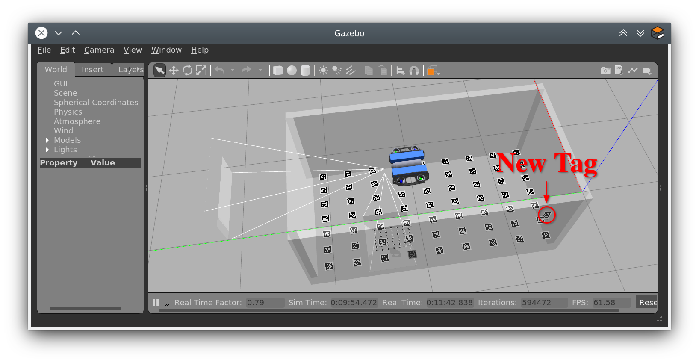

Final Project
Attention
Please make sure to update your local repository.
cd ~/fav/catkin_ws/src/bluerov_sim
To pull our changes, execute:
git pull origin --ff-only
New Gazebo World
There is a new world-file in bluerov_sim called tank_with_tags.world. It is a predefined world, that contains a model of the tank with apriltags on the floor, similiar to the real tank at the institute.
To load this world, when we launch Gazebo, we can include the gazebo_tags.launch instead of the gazebo_base.launch launch file.
A complete launch setup is provided in example_apriltag_world.launch.
roslaunch bluerov_sim example_apriltag_world.launch
It launches Gazebo with the apriltags in the tank and spawns the BlueROV.
New BlueROV2 Model
There is a new model of the BlueROV2, that has two cameras. To spawn this variant of the vehicle, pass the camera argument to the spawn_vehicle.launch launch file and set it to true.
example_apriltag_world.launch provides the possibility to hand over this argument via command line. It is set to false by default, so you only have to specify its value, if you want to set it to true.
roslaunch bluerov_sim example_apriltag_world.launch camera:=true
Line 9 creates a camera argument (that can be specified via commandline and defaults to false) that is passed to spawn_vehicle.launch in line 15.
1 <launch>
2 <!-- Vehicle spawn position so that tags are seen -->
3 <arg name="x" default="0.7" />
4 <arg name="y" default="2.0" />
5 <arg name="z" default="-0.7" />
6 <arg name="P" default="0.0" />
7 <arg name="R" default="0.0" />
8 <arg name="Y" default="1.57" />
9 <arg name="camera" default="false" />
10
11 <include file="$(find bluerov_sim)/launch/gazebo_tags.launch" />
12
13 <!-- spawn BlueROV model -->
14 <include file="$(find bluerov_sim)/launch/spawn_vehicle.launch">
15 <arg name="camera" value="$(arg camera)" />
16 <arg name="x" value="$(arg x)" />
17 <arg name="y" value="$(arg y)" />
18 <arg name="z" value="$(arg z)" />
19 <arg name="R" default="$(arg R)" />
20 <arg name="P" default="$(arg P)" />
21 <arg name="Y" default="$(arg Y)" />
22 </include>
23 </launch>
Hint
Feel free to modify the camera parameters at the end of the file bluerov_sim/models/uuv_bluerov2_heavy_cam/uuv_bluerov2_heavy_cam.sdf.
New AprilTag Models
In bluerov_sim/models there are many new apriltag models. 128 models in total now to be precise. IDs 0 to 63 are used for the tags on the floor.
Modify Gazebo Worlds
In general you have to options to get your models into a Gazebo world. Either you use predefined world files like the already mentioned tank_with_tags.world and specify the models you want to include (lines 22-24).
1 <?xml version="1.0"?>
2 <sdf version="1.6">
3 <world name="base">
4 <include>
5 <uri>model://sun</uri>
6 </include>
7 <!-- second sun to illuminate Tags -->
8 <light type="directional" name="sun2">
9 <cast_shadows>true</cast_shadows>
10 <pose>0 0 10 0 0 0</pose>
11 <diffuse>0.8 0.8 0.8 1</diffuse>
12 <specular>0.2 0.2 0.2 1</specular>
13 <attenuation>
14 <range>1000</range>
15 <constant>0.9</constant>
16 <linear>0.01</linear>
17 <quadratic>0.001</quadratic>
18 </attenuation>
19 <direction>0.0 1.0 0.0</direction>
20 </light>
21
22 <include>
23 <uri>model://apriltag_tank</uri>
24 </include>
25 </world>
26 </sdf>
Or you spawn models during runtime (like it is done for the BlueROV model for example). The gazebo_ros package provides functionality for this
Simply start the node in your launch file and pass it the path to the model’s sdf-file you want to spawn. You can also define the initial pose.
To spawn the apriltag with ID 127 you can add the following lines to your launch file.
<node name="choose_arbitrary_name" pkg="gazebo_ros" type="spawn_model"
args="-sdf -file $(find bluerov_sim)/models/tag36_11_00127/model.sdf
-model tag_127
-x 0.1 -y 0.3 -z -0.5
-R 0.9 -P 0.2 -Y 2.4" />
Or if you have Gazebo already running, you can enter
SDF_MODEL=$(rospack find bluerov_sim)/models/tag36_11_00127/model.sdf
rosrun gazebo_ros spawn_model -sdf -file $SDF_MODEL -model tag_127-x0.1 -y0.3 -z-0.5 -R0.9 -P0.2 -Y2.4
to spawn the apriltag.
